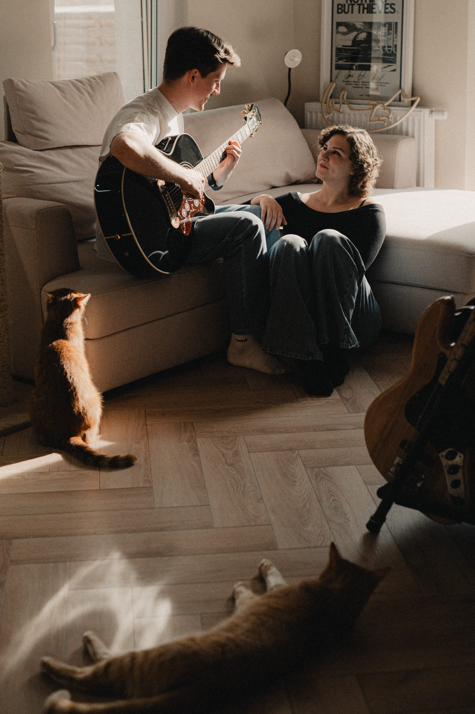

08.08.2026
Rodzinę oraz gości przyjeżdżających mamy możliwość przenocować w domkach na terenie Lasu. Przyjaciołom z Poznania i okolic możemy zaproponować nocleg w Hali (jest w pełni ogrzewana/klimatyzowana - wystarczy wziąć swój materac, karimatę i śpiwór) lub dla stałych OPenerowych bywalców proponujemy pole namiotowe (bring your own namiot kinda vibe)
Dzień po ślubie szykujemy wspólne śniadanie z kawą speciality, matchą i lemoniadami - będzie nam bardzo miło, jeśli do nas dołączycie
Prosimy o informację do 30.03 czy planujesz nocleg i obecność na śniadaniu.
Las · Bure 6 | dojazd.mp4

Wiemy, że na pewno pojawia się takie pytanie więc przychodzimy z odpowiedzią.
Zamiast kwiatów i butelek alkoholu prosimy o płytę winylową Waszego ulubionego wykonawcy z napisanym na niej życzeniami w ramach karty ślubnej
A w ramach prezentu planujemy podróż poślubną więc będziemy wdzięczni za dokładanie się do budżetu honey-moonowego :)
Czyli jak się ubrać, żeby pasować do klimatu Ślubu i przyjęcia
Prosimy o nie ubieranie się na biało ani kolory pokrewne
"Colorfull Garden Party Format"
Podczas ceremonii i przyjęcia będzie nam towarzyszyć zdalna fotografka Marcelina, zadba ona o upamiętnienie najważniejszych dla nas momentów dlatego prosimy o nie używanie telefonów podczas ceremonii ślubnej. Zależy nam, aby fotografka uchwyciła Wasze twarze i emocje, a nie modele telefonów hul
Podczas przyjęcia po części oficjalnej śmiało korzystajcie z telefonów!
Czy będą dzieci? Tak, nie wyobrażamy sobie tego dnia bez najmłodszych członków naszych rodzin.
Czy będzie alkohol? Nie, z wielu ważnych dla nas powodów. Prosimy o uszanowanie naszej decyzji.
Czy będzie parking? Tak, będzie możliwość zaparkowania samochodu.
Czy mogę zabrać osobę towarzyszącą? Zależy nam na kameralnym towarzystwie i ciepłym dniu, jeśli osoba towarzysząca nie była uwzględniona na zaproszeniu prosimy o nie przyprowadzanie nie znanym nam osoby.
Czy będzie czas wolny? Tak! Następnego dnia w niedzielę zachęcamy do zostania z nami na śniadaniu i korzystania z pięknej leśnej przestrzeni.